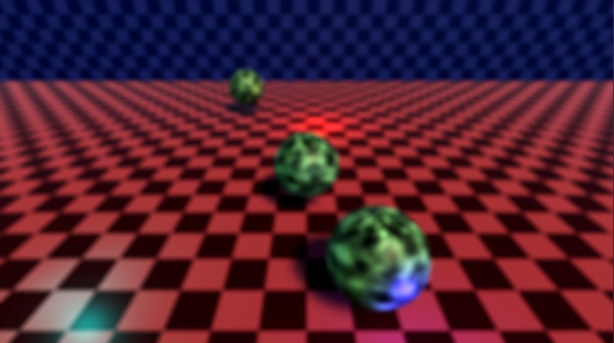

A post-processing effect that blurs the image based on a focal plane and distances from this plane, known as a circle of confusion, which simulates the effect of a camera with a wide aperture
To show how this effect works, we start with this source render

This scene produces the following depth buffer during render

From this depth buffer, we can take our desired focal plane and get which fragments should be considered background, which should be foreground, and which are in focus
With this we can build a buffer where then red and green channels store this information

We want to separate the background from the rest of the image and blur them separately, this is so the foreground can bleed into the background when blurred, but not the other way around
To do this, we create a mask by generating a mask from the background channel of the circle of confusion
And storing it as the blue channel, creating a buffer with all the supporting data that we need to render the effect

With this buffer done, we can apply the mask to the camera source to get a background only buffer

That we can then blur separately

Now we can blur everything. This will be the source for the foreground blur later
Finally, we can take the circle of confusion red and green channels to interpolate between the three buffers we have, the blurred background, blurred whole image, and the original camera source

With the effect done, the rendering can continue normally and we get a final result that mimics a camera shallow depth of field